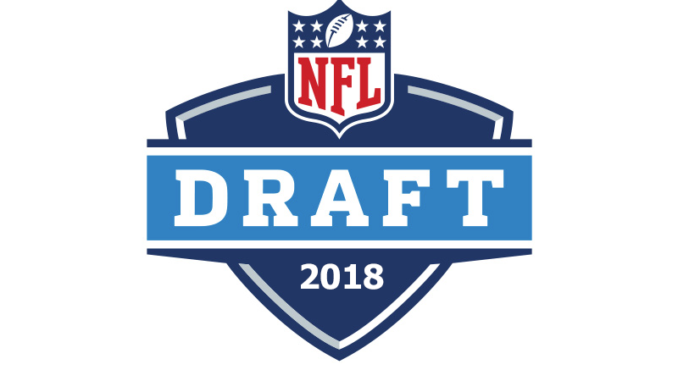
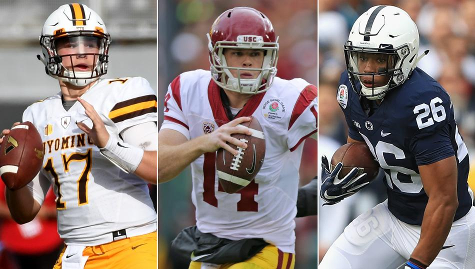

Home
Super Bowl
2018 Draft
Upcoming Free Agents

2018 NFL Mock Draft
- 1. Cleveland Browns- Sam Darnold, QB, USC
- 2. New York Giants — Josh Allen, QB, Wyoming
- 3. Indianapolis Colts — Bradley Chubb, DL, N.C. State
- 4. Cleveland Browns — Saquon Barkley, RB, Penn State
- 5. Denver Broncos — Baker Mayfield, QB, Oklahoma
- 6. New York Jets — Josh Rosen, QB, UCLA
- 7. Tampa Bay Buccaneers — Derwin James, DB, Florida State
- 8. Chicago Bears — Courtland Sutton, WR, SMU
- 9. San Francisco 49ers — Denzel Ward, DB, Ohio State
- 10. Oakland Raiders — Minkah Fitzpatrick, DB, Alabama
- 11. Miami Dolphins — Roquan Smith, LB, Georgia
- 12. Cincinnati Bengals — Quenton Nelson, G, Notre Dame
- 13. Washington Redskins — Calvin Ridley, WR, Alabama
- 14. Green Bay Packers — Joshua Jackson, DB, Iowa
- 15. Arizona Cardinals — Connor Williams, OT, Texas
- 16. Baltimore Ravens — Orlando Brown, OT, Oklahoma

- 17. Los Angeles Chargers — Mike McGlinchey, G, Notre Dame
- 18. Seattle Seahawks — James Washington, WR, Oklahoma State
- 19. Dallas Cowboys — Christian Kirk, WR, Texas A&M
- 20. Detroit Lions — Derrius Guice, RB, LSU
- 21. Buffalo Bills –Mason Rudolph, QB, Oklahoma State
- 22. Buffalo Bills — Arden Key, DL, LSU
- 23. Los Angeles Rams — Rashaan Evans, LB, Alabama
- 24. Carolina Panthers — Marcus Davenport, DL, UTSA
- 25. Tennessee Titans — Maurice Hurst, DL, Michigan
- 26. Atlanta Falcons — Vita Vea, DL, Washington
- 27. New Orleans Saints — Tremaine Edmunds, LB, Virginia Tech
- 28. Pittsburgh Steelers — Malik Jefferson, LB, Texas
- 29. Jacksonville Jaguars — Harold Landry, LB, Boston College
- 30. Minnesota Vikings — Billy Price, OL, Ohio State
- 31. New England Patriots — Mark Andrews, TE, Oklahoma
- 32. Philadelphia Eagles — Ogbonnia Okoronwko, LB, Oklahoma
An Eagles Spin on the 2018 NFL Draft
With Alshon Jeffery signing an extension in December and Ajayi brought aboard midseason, the Eagles shouldn't spend much time looking at adding premium talent at the skill positions. Torrey Smith likely won't have his option picked up, theoretically putting the team in the market for a receiver, but 2017 fourth-rounder Mack Hollins could take over the role as a complement to Jeffery, Zach Ertz and Nelson Agholor. Instead, the attention on offense should be on the line, where Jason Peters is coming off a torn ACL that caused big problems once Halapoulivaati Vaitai was thrust into a starting role. Finding a second tackle to pair with Lane Johnson long-term is paramount and could be most logical use of the team's first-round pick.
On defense, the team should be on the lookout for a third linebacker to play in base formations. At cornerback, the Eagles should do everything they can to get Patrick Robinson re-signed after his excellent year, and having a healthy Sidney Jones for the 2018 season will also go a long way toward solidifying the unit. A replacement for Corey Graham as the third safety should also be found.